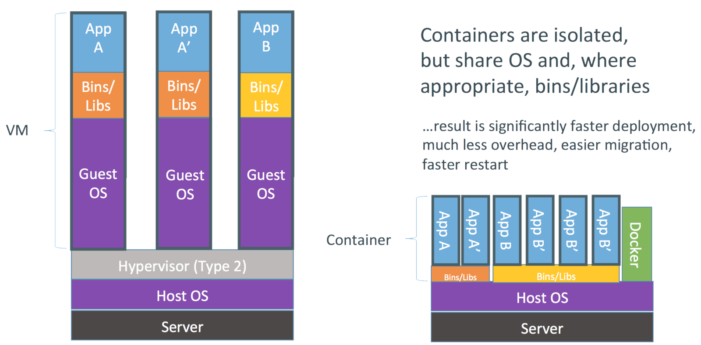
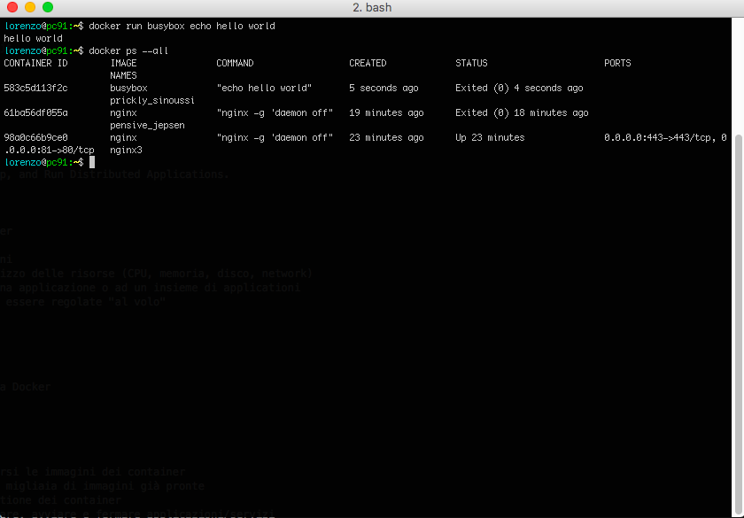

$ docker run busybox echo hello world
hello worldDocker! Chi era costui?
Linux Day Pisa - 22/10/2016
Docker
An Open Platform to Build, Ship, and Run Distributed Applications.

C’erano una volta i container
Disponibili nei kernel moderni
Permettono di isolare l’utilizzo delle risorse (CPU, memoria, disco, network)
Garantiscono le risorse ad una applicazione o ad un insieme di applicationi
Le risorse assegnate possono essere regolate "al volo"
Container != VM

Il mondo dei container senza Docker
Arriva Docker
Formato standard per scambiarsi le immagini dei container
Repository centralizzato con migliaia di immagini già pronte
Tools per la creazione e gestione dei container
Un modo standard per installare, avviare e fermare applicazioni/servizi
Arriva Docker (cont)
Niente più formati di pacchetti differenti (deb, rpm, gem, apk….) e problemi di dipendenze
API RestFull per interfacciarsi con il demone docker
Nuovo modo di testare e distribuire le proprie applicazioni
Nessuna differenza tra ambiente di produzione e sviluppo
La famiglia Docker
La famiglia Docker (cont)
Docker Engine
Docker Hub
Docker Registry
Docker Compose
Docker Machine
Docker Swarm
Docker engine
Docker è un’applicazione client/server
Il client Docker invia i comandi al demone Docker che esegue le operazioni
Il demone e client docker sono scritti in Go
Il demone Docker espone una API RestFull
Hello World!
Demo

Immagini vs Container
Le immagini sono dei template read-only da cui vengono avviati i container
Ogni immagne è formata da un’insieme di livelli (layer)
Quando un’immagine viene modifica un nuovo layer viene creato
Dalla stessa immagini possono essere avviati infiniti container
Docker layered filesystem

Demo
Domande?
Slide disponibili su https://criluc.github.io/docker-ld2016/
Lorenzo Luconi Trombacchi <lorenzo.luconi@iit.cnr.it>, @llt73
Cristian Lucchesi <cristian.lucchesi@iit.cnr.it>, @criluc